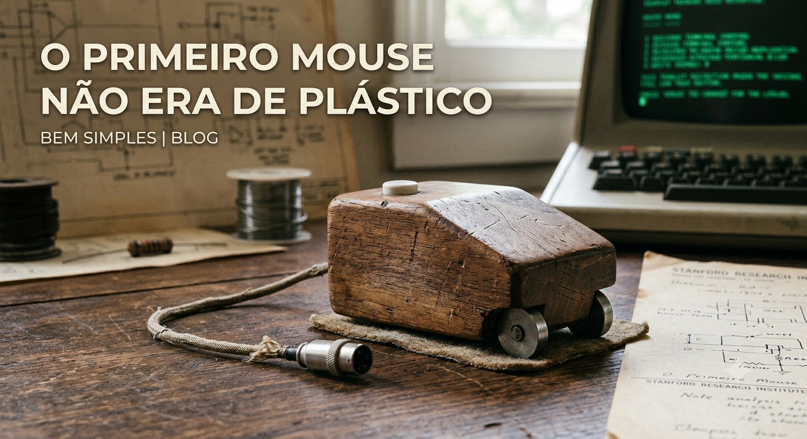
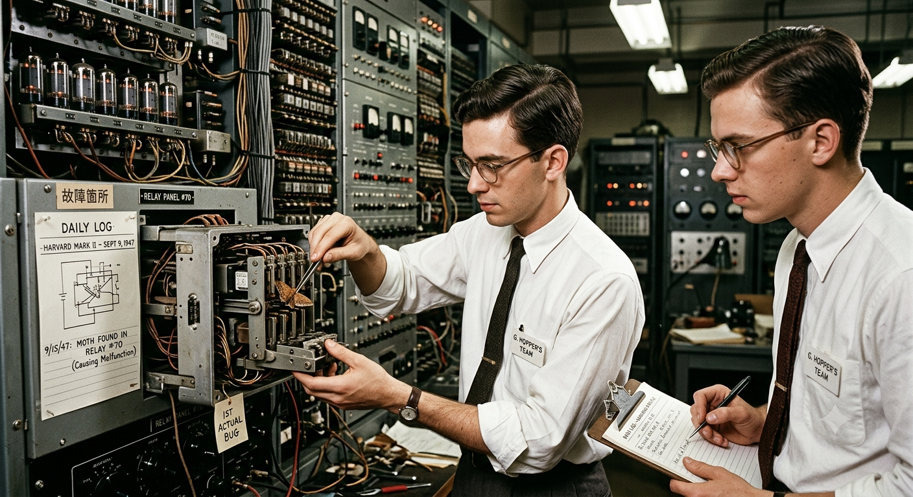

Meu primeiro post
Por: Maria Luiza
Boas-vindas ao meu novo blog! Aqui vou compartilhar dicas de programação e curiosidades da área de tecnologia.
Vou compartilhar conhecimento sobre tecnologia e programação
Por: Maria Luiza
Boas-vindas ao meu novo blog! Aqui vou compartilhar dicas de programação e curiosidades da área de tecnologia.
Por: Maria Luiza
Estima-se que 90% de todos os dados existentes no mundo hoje foram gerados apenas nos últimos dois anos. Vivemos em uma verdadeira explosão de informação que não para de acelerar.

Por: Maria Luiza
Antes do design ergonômico e das luzes RGB, o primeiro mouse do mundo foi construído em madeira! Criado por Douglas Engelbart em 1964, ele tinha o formato de uma caixa quadrada e apenas um botão.
Por: Maria Luiza
O nome é uma homenagem ao rei viking Harald Blatand Gormsson, que unificou tribos da Escandinávia. Seu apelido era Harald "Bluetooth" porque seus dentes eram tão podres que tinha uma coloração azul escura.

Por: Maria Luiza
O termo "Bug" (inseto) para erros de software ficou famoso em 1947, quando o engenheiros encontraram uma mariposa real presa dentro do computador Harvard Mark 11, causando uma falha no sistema.
Por: Maria Luiza
Em 1991, pesquisadores da Univercidade de Cambridge criaram a primeira webcam para não perderem tempo indo até a cozinha e encontrando a cafeteira vazia. Eles monitoravam o nivel de café em um tempo real nos seus monitores.